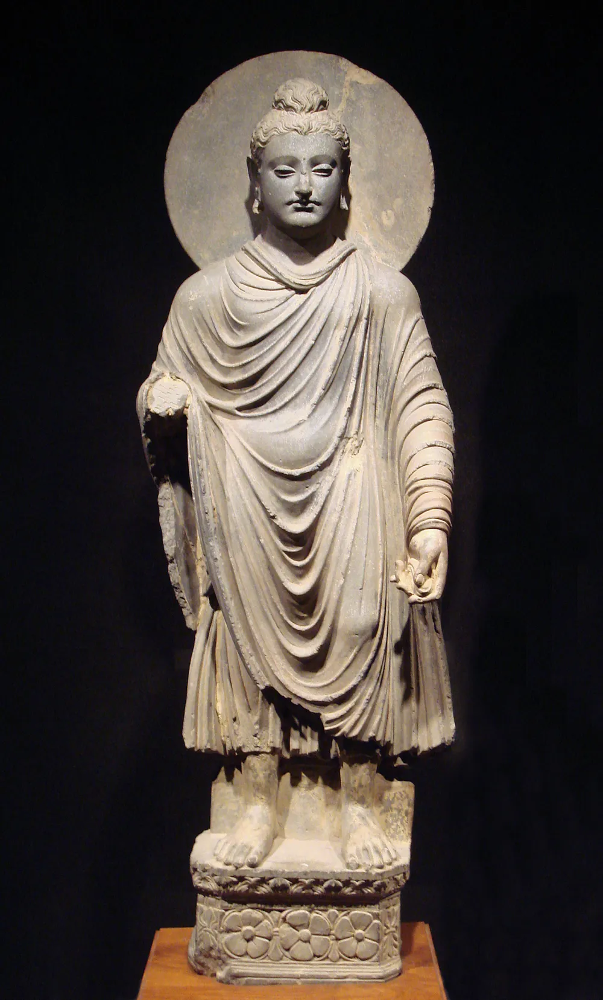
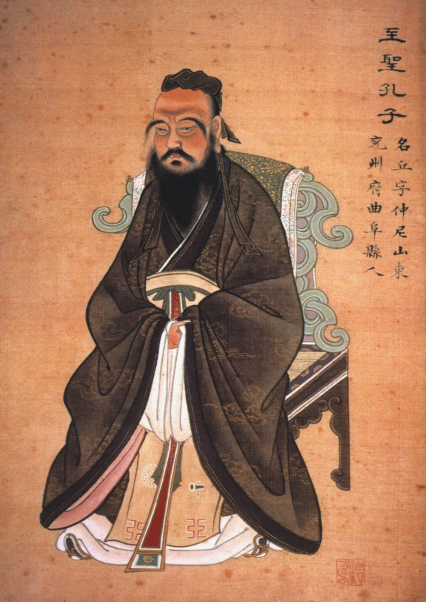

"왜 생명을 소중히 해야하냐고? 아니 시발 중생이여 생각을 해보거라..."

"씨발 사람 모가지 좀 제물로 그만 바치라고"
"네 옆에 있는 사람한테 잘 좀 해줘라. 아니... 종교가 다르다고 죽이면 안 되지 이 미친 독사새끼야"
"아뇨 선생님 그... 다른 대륙에서 태어났다고 해서 걔네들이 인간이 아니게 되는 건 아닙니다 걔네들도 당연히 인간... 후..."
"자, 이게 도덕이라는 거야. 도덕은 인간이 지켜야하는 거야"
"아니 아버님 애 좀 그만 패시라구요. 예? 어른은 다 책임지는데 왜 아이들만 우대하냐고요? 시발 애들이 뭘 알아요..."
"피부가 검으니까 평생 노예하라고요? 미친새끼세요?"
"법 지켰는데 뭐가 문제냐고요? 하... 여러분 공정하다는 건 말이죠..."
현대인의 도덕은 사실상 문과가 만들어낸 로켓임

노예주는 죽어도 돼 존 브라운은 의도는 공감해도 여기 나오기엔 좀 흉악한 사람인데ㅋㅋ